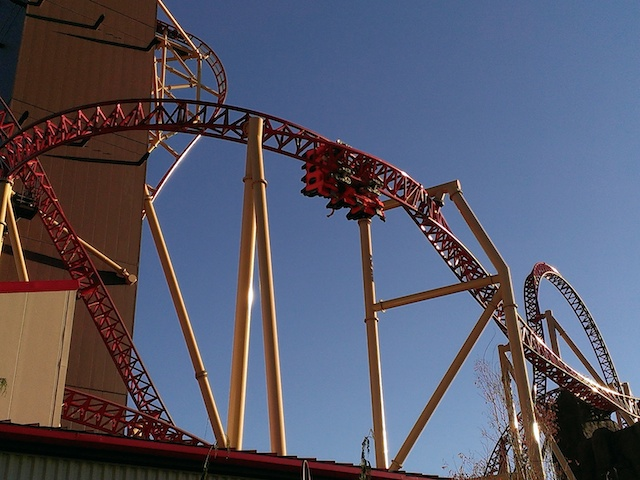
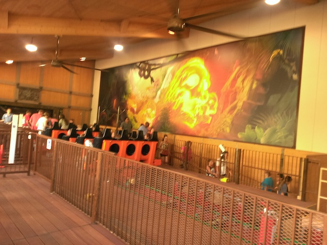
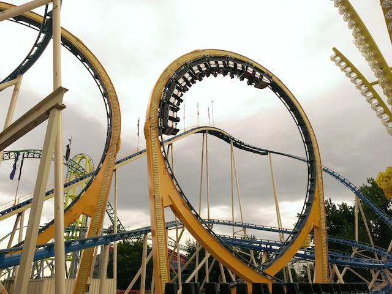
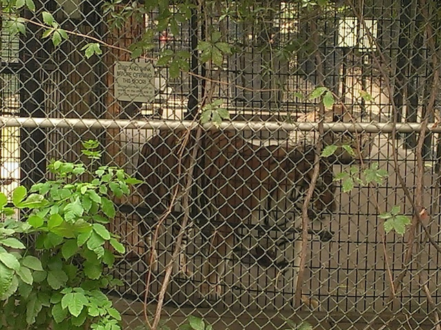
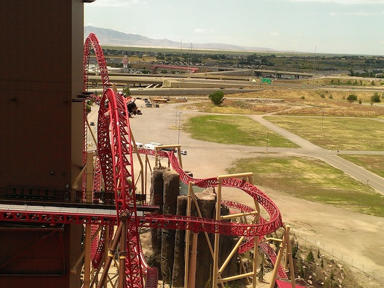
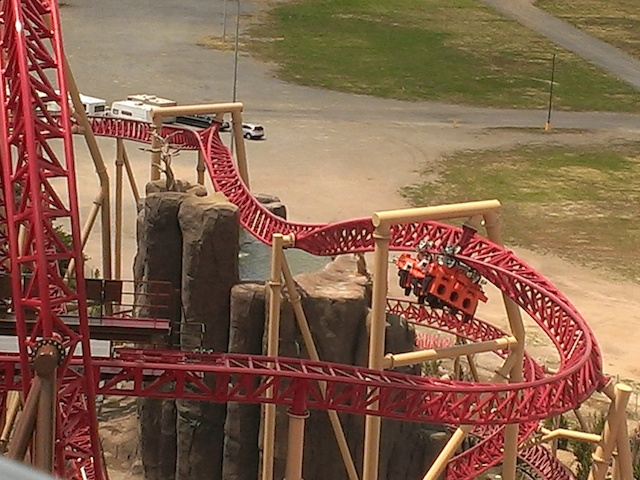
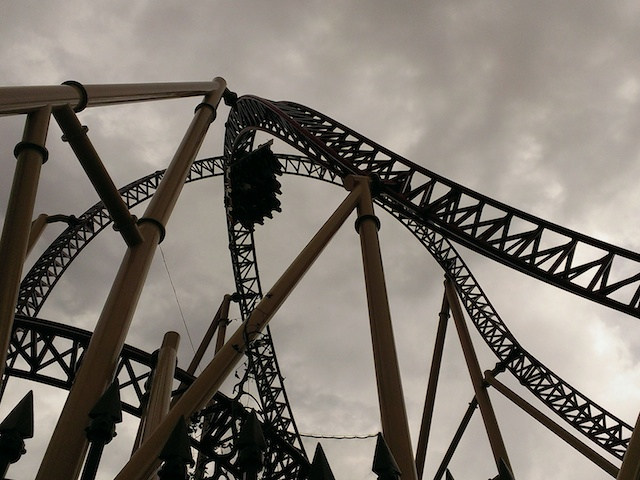
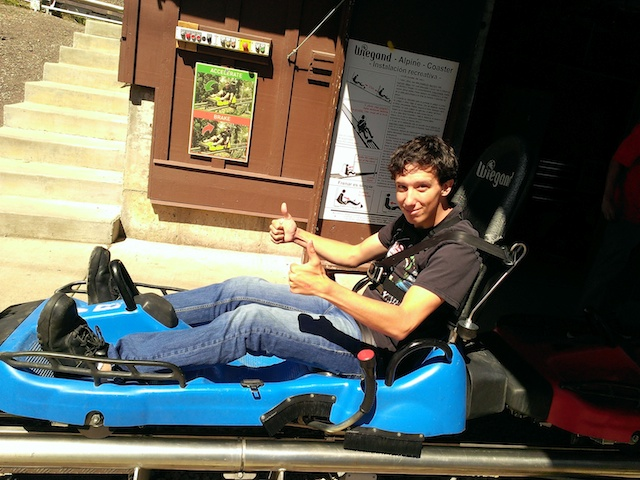
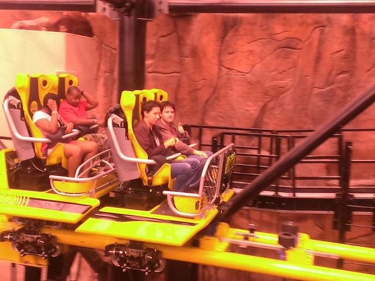

| |
Cannibal Trip
All right. Time for another trip. We had already visited Lagoon earlier this year and had a blast. Well, they just opened up Cannibal for 2015, we have season passes, and of course, we had to go back. Because yeah. Lagoon is just awesome. Anyways, call Chris for your test strips all you diabetics. =)
Happy to be back here in Salt Lake City.
All right. Story time. When we were driving through Salt Lake City a couple months ago, we stumbled across this playground and wanted to stop, but couldn't for time. So Cody decided that we would come here in July. And, here we are.
Aww. I miss those spinning things. I have fond memories of these things being in Ventura and am still not happy that they got removed here. Well, at least they're still here.
 Kim Jong Un is officially endoresed by Salt Lake City. Who knew. =)
Kim Jong Un is officially endoresed by Salt Lake City. Who knew. =)
 Yeah. It may just be a playground, but I had fun here for about 15 minutes. Fun little stop.
Yeah. It may just be a playground, but I had fun here for about 15 minutes. Fun little stop.
All right. Time for the real reason we came back here.
 I know that I'll talk about Cannibal in far greater detail down below, but let me just say now that Cannibal is really freaking good.
I know that I'll talk about Cannibal in far greater detail down below, but let me just say now that Cannibal is really freaking good.

I will admit that it wasn't *quite* as crazy as I was hoping. But screw it!!! It runs beautifully, is still a ton of fun, fits in BEAUTIFULLY with Lagoon, and is just an overall great ride.

Love the look of the station. =)
All right. Let's get this day started with one of the craziest and more underrated flat rides out there, Samurai.

So glad that Lagoon is taking care of these classic rides that are sadly becoming rare.
Be careful guys. This is one of the more brutal Wild Mouse coasters out there. =)
Ha. Looks like the lap bar is his dick. Yes, I am immature. No, I don't give a f*ck.

Hey tiger. Cheer up. Yeah, the caged life isn't that good, but at least you're at Lagoon.
All right. Time to head back into Pioneer Village.
But first, let's stop for Ice Cream.
If you've been debating about whether you should get a cup or cone, have no fear. At Lagoon, you get both.
Back in the olden days, we had these creatures called Peacocks roam the streets.
I keep coming back here every time I come to Lagoon, and I keep finding cool stuff to take pictures of. =)
Uh...no. That's not what my work space looks like.
Someone over here really liked building model trains.
Oh look. I'm back home in Ventura. Joy.
Anyone care to go for a spin?

Love these ariel shots of Cannibal.

You notice how the second inline twist actually goes in the opposite direction as the first one? Yeah, it's a really funky and crazy element.
 Don't worry. That Cannibal line isn't nearly as bad as it seems.
Don't worry. That Cannibal line isn't nearly as bad as it seems.
Lagoon from the top of the ferris wheel.
I don't mind taking a ride on this classic flat ride.
Am I the only one thinking of a certain coaster right now? =)
Spider is still running great as usual.
I'm not sure why the skyride here is so good, but it just is.
Water cannons on Rattlesnake Rapids? JACKPOT!!!
Hey Mormon Pink Sweater Girl! Think fast! Though really, she's screwed even if we don't blast her. That waterfall will get her regardless. >=)
Hmm. The river is dried up again. You know, I'm starting to sense a pattern. Both times we visited in May, the river was flowing. And both times we visited in July, the river was dried up. Guess this is a seasonal river.
Meh. That's no big deal. I know plenty of bears that'll be happy to let me sit on them. =)
We are terrible people.
You know, this dragon ride was actually much stronger than I was anticipating.
 Good luck. You're going to need it.
Good luck. You're going to need it.
 HELIX OF DEATH!!!
HELIX OF DEATH!!!
 You know, I may not be a big fan of the S&S Towers, but this was still a really fun ride.
You know, I may not be a big fan of the S&S Towers, but this was still a really fun ride.
"Ready for Blast Off!!!"
 Do not underestimate the wooden coaster at Lagoon.
Do not underestimate the wooden coaster at Lagoon.
 It may look plain and ordinary, but it's actually got some great airtime.
It may look plain and ordinary, but it's actually got some great airtime.
 All right. Let's go for some more rides on Cannibal. =)
All right. Let's go for some more rides on Cannibal. =)
 Cannibal may look intimidating, but it just blends in with the park PERFECTLY. A perfect fit for Lagoon.
Cannibal may look intimidating, but it just blends in with the park PERFECTLY. A perfect fit for Lagoon.

Definetly make sure to check it out and give it a ride when visiting Lagoon.
Well, we had a fun day at Lagoon. The next day, we decided to head over to Park City and check out all the cool Alpine Coasters and other fun stuff.
While I didn't do the Alpine Slide (Financial Lockdown), I did manage to do the Alpine Coaster.
I love Alpine Coasters and am really excited to be riding another one today.
This one really takes you deep in the mountains and has a great layout.

I'm having a hard time deciding if I prefer this Alpine Coaster or the one at Fort Fun.
Oh, and this place once hosted the Winter Olympics. I'm impressed that this place didn't become a ghost town like so many other places that hosted the Olympics.
If you know me, then you know that I HATE bottled water with a passion. So I am extremely happy to see these refilling stations taking off.
The more pollution we stop by not buying what we can get for free, plus a bunch of unnecesarry waste, the better.
Park City is just a great town to walk around in.
We were just driving around, planning on heading back, and we just stumbled upon the Olympic Park and saw the Summer Ski Jump.
HOLY CRAP! THAT LOOKS SO AWESOME!!! If it wasn't for the stupid f*cking drought, I'd petition to have one of these built in Ventura (Great, now it's ruining this as well as cliff jumping). I can certainly tell you that Ski Jumping would be a big hobby of mine if that was built in Ventura (I'd like to get into Skiing, but it's expensive, I'm poor, and I have enough expensive intrests and hobbies as it is).
Well that was fun. Let's head back to Lagoon for the night and a couple more rides.
 And of course, let's take another ride on Lagoon's newest ride and my personal favorite in the park, Cannibal.
And of course, let's take another ride on Lagoon's newest ride and my personal favorite in the park, Cannibal.
I love little touches like that where they theme the line supports to be like trees.
 Again, it's not crazy intense, but it's just a ton of fun. Kind of like a lot of B&Ms these days.
Again, it's not crazy intense, but it's just a ton of fun. Kind of like a lot of B&Ms these days.
 And of course, while heading back, we had to stop in Vegas for more fun on El Loco.
And of course, while heading back, we had to stop in Vegas for more fun on El Loco.

I actually didn't ride El Loco this time thanks to financial lockdown. Yeah, it's a bummer since I really like the ride. But I did ride it a couple months ago, so it's not a big deal.
I could go on and on about just how disasterous and pants-sh*ttingly terrifying Donald Trump as president would be and go and about what I think of him, but I can save myself and everyone else time by revealing my thoughts on Trump with one swift flick of my middle finger.
Dylan wasn't quite sure if Cody and I were exaggerating when we say that Manhattan Expess is really that bad, so Cody took him on it to show him just how Manhattan Express runs.
HELL NO!!! I did NOT ride Manhurtin Express. If I'm going to pay an outrageous amount of money to ride a roller coaster, I would've just ridden El Loco since unlike Manhattan Express, I actually LIKE that ride.
And of course, we met up with John, and he introduced us to 800 degrees Pizza. A great pizza place. Definetly my favorite Pizza Place that isn't in either New York City or Rome.
And we stopped for shakes at Shake Shack afterwards, cause yeah. It's really good.
John, your life is going to be so busy when they finally finish the arena at MGM.
And when we were on our way home, we got stuck in the WORST traffic ever. No really, this was by far, the WORST traffic I had ever been in, crushing my old record. Over on the 15, right around Baker, traffic just came to a standstill. This was so bad that we actually parked our car, and walked around the freeway. It was like that episode of Malcolm in the Middle where they all get stuck in a non-moving traffic jam coming home from Wild Rivers (R.I.P. and F*CK YOU IRVINE COMP!!!). Yeah, it was like that, except we're not nearly that crazy.
"Hey! It's not that bad! I can sit on the car, wave at people, run around, play frisbee with an old frisbee that some stupid kid probably threw away, and pee in front of traffic on the other side of the freeway!". But seriously, I'm glad that I was with friends and could make the best of the situation cause I know I would've gotten angry and been miserable had I been stuck in this alone.
Screw it! This is taking too long! I'm rolling back to Ventura! I'm happy I went back to Lagoon, Cannibal is awesome, Lagoon keeps proving itself to be awesome, and I might or might not go back in October. I'll see how everything plays out.
Home
|